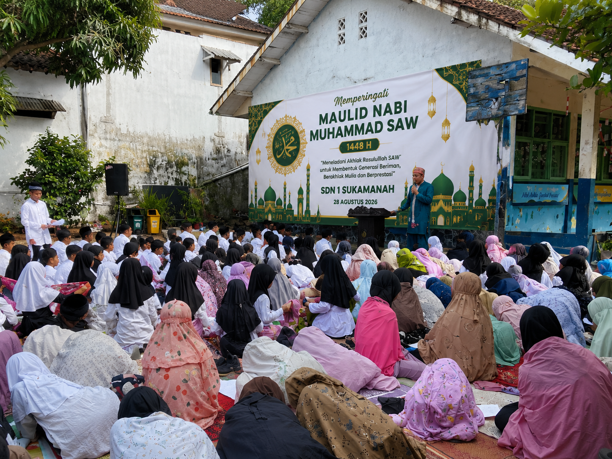
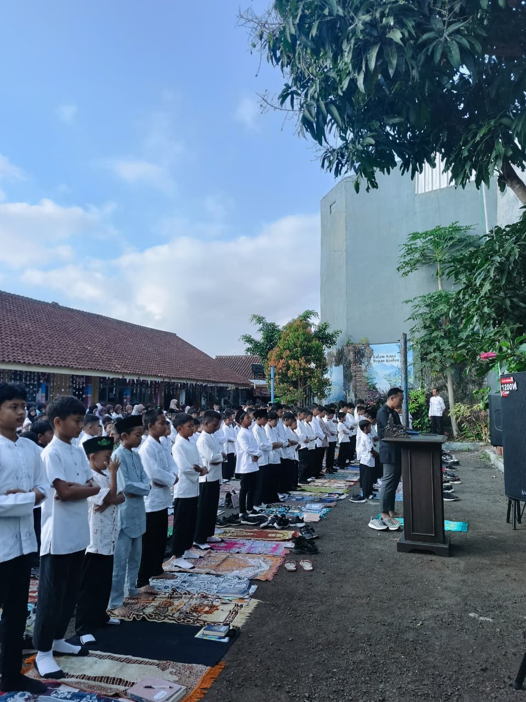
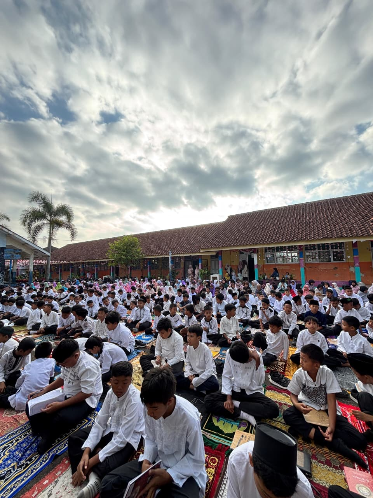
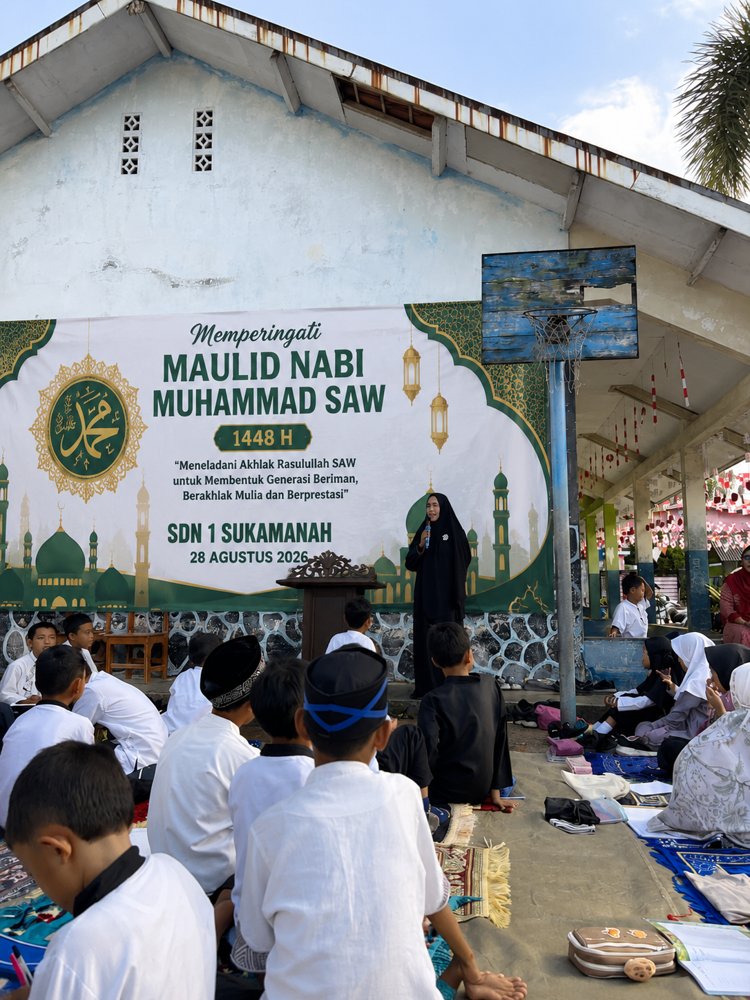
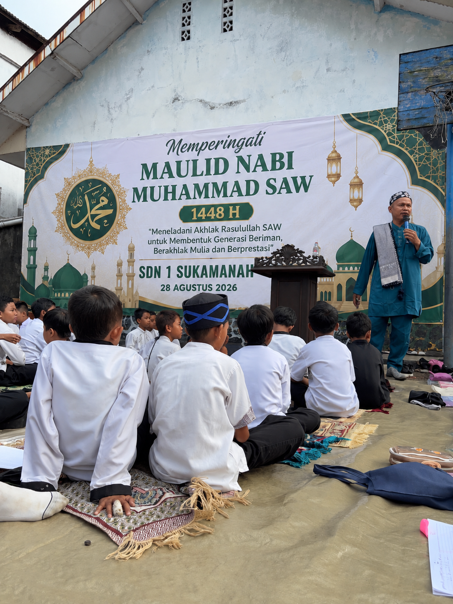
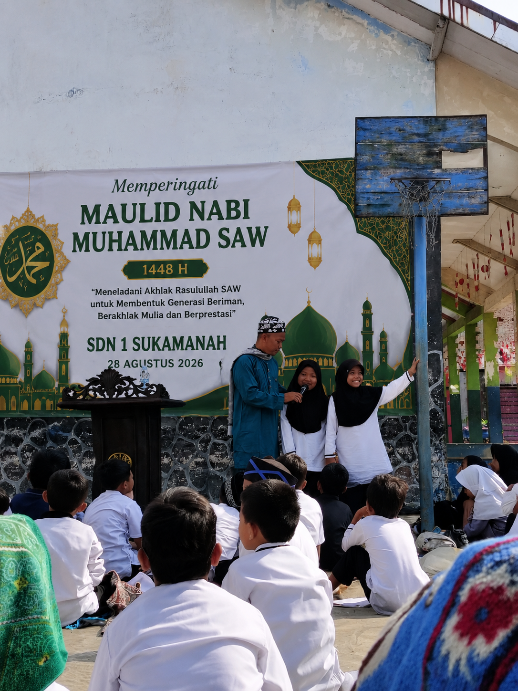
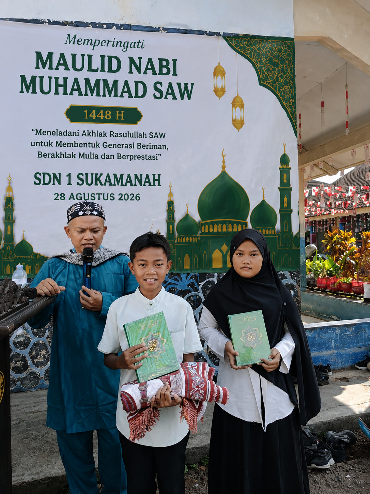

Tasikmalaya — SDN 1 Sukamanah melaksanakan kegiatan peringatan Maulid Nabi Muhammad SAW pada Jumat, 28 Agustus 2026. Rangkaian kegiatan diawali dengan salat Dhuha berjamaah yang diikuti oleh warga sekolah sebagai bentuk pembiasaan kegiatan keagamaan sekaligus mempersiapkan suasana yang khidmat sebelum acara Maulid Nabi dimulai.
Setelah pelaksanaan salat Dhuha berjamaah, kegiatan dilanjutkan dengan acara peringatan Maulid Nabi Muhammad SAW. Kegiatan ini menjadi momentum bagi seluruh warga SDN 1 Sukamanah untuk mengenang kelahiran Nabi Muhammad SAW sekaligus meneladani akhlak mulia beliau dalam kehidupan sehari-hari.
Peringatan Maulid Nabi Muhammad SAW diikuti oleh warga SDN 1 Sukamanah dengan penuh antusias. Selain sebagai bagian dari peringatan hari besar keagamaan, kegiatan ini juga menjadi sarana pendidikan karakter bagi peserta didik.
Melalui kegiatan ini, para siswa diajak untuk semakin mengenal dan meneladani sifat-sifat mulia Nabi Muhammad SAW, seperti jujur, amanah, disiplin, santun, saling menghormati, menyayangi sesama, serta peduli terhadap lingkungan sekitar.
Nilai-nilai keteladanan tersebut diharapkan tidak hanya dipahami selama kegiatan berlangsung, tetapi juga dapat diterapkan dalam kehidupan sehari-hari, baik di lingkungan sekolah, keluarga, maupun masyarakat.
Peringatan Maulid Nabi Muhammad SAW menjadi bagian dari upaya SDN 1 Sukamanah dalam menanamkan nilai keimanan, ketakwaan, dan akhlak mulia kepada peserta didik sejak dini. Pendidikan karakter tersebut diharapkan berjalan seiring dengan pembelajaran akademik di sekolah.
Dengan mengenal keteladanan Rasulullah SAW, peserta didik diharapkan tumbuh menjadi pribadi yang berilmu, berakhlak baik, bertanggung jawab, serta mampu membangun hubungan yang harmonis dengan sesama.






Melalui peringatan Maulid Nabi Muhammad SAW tahun 2026 ini, SDN 1 Sukamanah berharap seluruh warga sekolah dapat semakin mencintai Rasulullah SAW serta menjadikan akhlak dan keteladanan beliau sebagai pedoman dalam kehidupan sehari-hari.
Kegiatan berlangsung dalam suasana kebersamaan dan menjadi pengalaman pembelajaran yang bermakna bagi peserta didik.
Mari Meneladani Akhlak Rasulullah dalam Kehidupan Sehari-hari. 🌙✨
← Kembali ke Berita